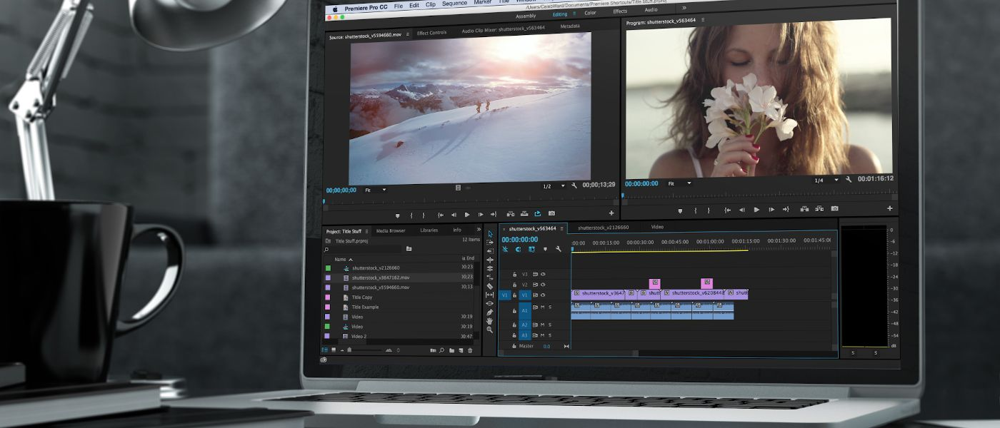

VIDEOS
En Trapstar, llevamos la creatividad al siguiente nivel. Somos un equipo apasionado de expertos en edición de videos musicales y entretenimiento, listos para transformar tus ideas en piezas audiovisuales deslumbrantes. Nuestra misión es simple: hacer que tus sueños cobren vida en la pantalla. Ya seas un músico independiente que busca un video musical impresionante o un creador de contenido en busca de videos de entretenimiento únicos, estamos aquí para ayudarte.
Nuestro equipo de expertos en edición de videos está listo para ayudarte a dar vida a tus proyectos musicales. Ya sea que seas un músico emergente que busca destacar en la escena o un artista consolidado que quiere llevar su música al siguiente nivel, aquí encontrarás las herramientas y el apoyo necesarios.
Desde la sincronización perfecta entre la música y las imágenes hasta la creación de efectos visuales impresionantes, nuestro objetivo es potenciar tu visión artística y transformarla en un video musical que atrape la atención de tu audiencia. Con tecnología de vanguardia y una pasión inquebrantable por la música, garantizamos que tu video musical será una verdadera obra maestra.
En nuestra plataforma, encontrarás una amplia gama de servicios, que incluyen la edición de videos en vivo, la animación de letras, la corrección de color, la producción de efectos visuales y mucho más. Sea cual sea tu visión, estamos aquí para convertirla en realidad. Además, ofrecemos asesoramiento personalizado para ayudarte a tomar decisiones informadas sobre la dirección de tu proyecto. Nuestro equipo de expertos está comprometido en brindarte apoyo en cada paso del proceso de edición, desde la preproducción hasta la postproducción.
